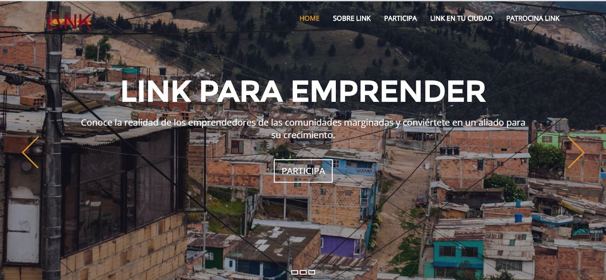
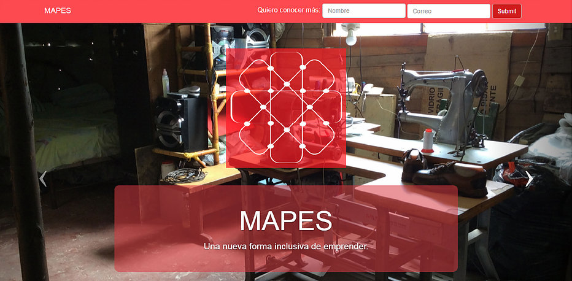
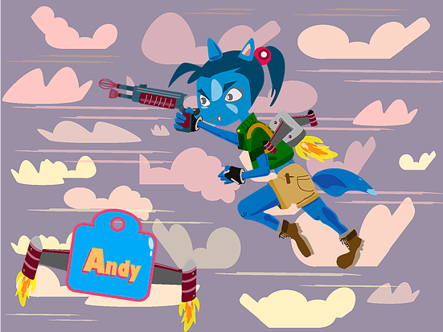

HABILIDADES
He podido desarrollar diferentes habilidades enfocadas a los proyectos web, aplicándolos a proyectos multidisciplinares, haciendo una gran experiencia para los usuarios y estas son mis habilidades:

Desarrollo web
Modelado de datos por medio de Hmtl5, diseño e interacción por medio de css3 y javascript manejo de backend entre otros.

Maquetación
Uso de herramientas y metodologias como mockups y wireframes, para el diseño web atractivo e intuitivo para el usuario.

Diseño
Domino diversas herramientas de diseño para construir productos digitales pensando en la interface y la experiencia de usuario.
PROYECTOS DESTACADOS:
Por medio de la página web de Link para emprender la organización Ahmsa Colombia, realizó la inscripción y convocatoria de más de 40 personas que participaron en este concurso de emprendimiento. En este evento se reunieron emprendedores y personas de comunidades vulnerables de altos de Cazucá y formaron equipos mixtos para proponer ideas de negocio de alto impacto social.
link para emprender:

Por medio de la página web de Link para emprender la organización Ahmsa Colombia, realizó la inscripción y convocatoria de más de 40 personas que participaron en este concurso de emprendimiento. En este evento se reunieron emprendedores y personas de comunidades vulnerables de altos de Cazucá y formaron equipos mixtos para proponer ideas de negocio de alto impacto social.
Mapes:

Por medio de la página web de Link para emprender la organización Ahmsa Colombia, realizó la inscripción y convocatoria de más de 40 personas que participaron en este concurso de emprendimiento. En este evento se reunieron emprendedores y personas de comunidades vulnerables de altos de Cazucá y formaron equipos mixtos para proponer ideas de negocio de alto impacto social.
Se le tiene:

Por medio de la página web de Link para emprender la organización Ahmsa Colombia, realizó la inscripción y convocatoria de más de 40 personas que participaron en este concurso de emprendimiento. En este evento se reunieron emprendedores y personas de comunidades vulnerables de altos de Cazucá y formaron equipos mixtos para proponer ideas de negocio de alto impacto social.
Andy´s Collect:

Por medio de la página web de Link para emprender la organización Ahmsa Colombia, realizó la inscripción y convocatoria de más de 40 personas que participaron en este concurso de emprendimiento. En este evento se reunieron emprendedores y personas de comunidades vulnerables de altos de Cazucá y formaron equipos mixtos para proponer ideas de negocio de alto impacto social.
Enlazados:
Por medio de la página web de Link para emprender la organización Ahmsa Colombia, realizó la inscripción y convocatoria de más de 40 personas que participaron en este concurso de emprendimiento. En este evento se reunieron emprendedores y personas de comunidades vulnerables de altos de Cazucá y formaron equipos mixtos para proponer ideas de negocio de alto impacto social.